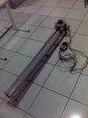

T-Shirt Hurling contest: day 1
Oscar Salguero Guandique from El Salvador was the first finalist in
this years
t-shirt hurling contest to show his stuff. It was a
belt-driven contraption with a big electic motor at one end. It
should have worked really well, but ended up somewhat
heartbreaking: just before the keynote started I went back to check
on how his tuning was going. As I walked up there was a very
distinct characteristic smell that anyone who works around
electical stuff gets to learn well: there was smoke billowing out
of the motor housing that made the situation clear. When he finally
got to shooting shirts, there wasn't a whole lot of oompf left in
the motor. Noetheless, it was still a lot of fun.